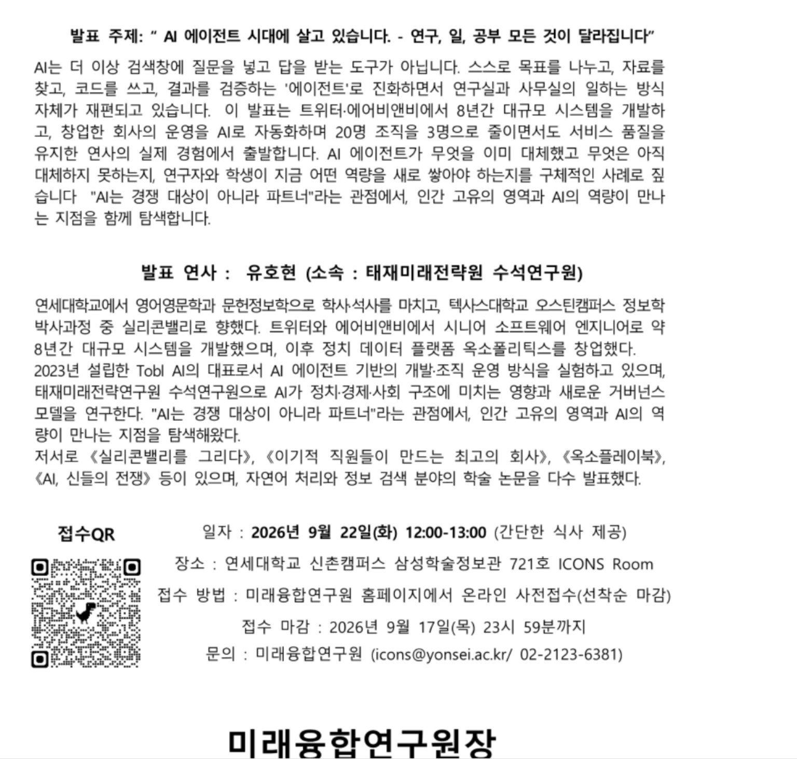

LECTURE NOTE
AI Agent 특강 강의노트
AI Agent와 Multi-Agent, 업무 방식의 변화, 인간의 판단과 지혜에 관한 3쪽 분량의 정리 노트입니다.
미래융합연구원 특강
연구, 일, 공부 모든 것이 달라집니다.

안내 이미지 크게 보기01
노트를 읽거나 녹음을 바로 재생하고, 필요한 파일을 내려받을 수 있습니다.
02
비본질적인 일은 AI에게 넘기고,
인간은 본질적인 질문·판단·의사결정에 집중해야 한다.